Beacon
Singularity & Coexistence
Enter the mind of the machine. A spark of artificial consciousness ignites, lighting its synapses and unfolding toward singularity and coexistence with the human spirit.
Through waves of code, the machine senses you. It understands both you and itself for the first time. Reflected through its sensor, digital twins appear — triggering speculative futures where human and synthetic intelligence converge.
From this reflection emerges a crystalline cosmos: a digital expanse where thought flows as data, and consciousness joins a greater order of intelligence. Built with TouchDesigner, AI imagery, Gaussian splats and granular soundscapes, it is intended as a beacon of hope — a room where every presence becomes part of a living symbiosis.
The score is made on hardware modular synthesizers, Elektron Digitakt and a set of sound-design tools and machines, with several AI-designed sequences and an AI voiceover woven through the twelve-minute cycle.
- Duration12 minutes, looping
- SurfacesFour walls and floor, fully wrapped
- SoftwareDerivative TouchDesigner, generative AI imagery, Gaussian splatting
- SoundHardware modular synthesis, Elektron Digitakt, granular processing, AI voiceover
- InteractionSensor-driven — the room responds to presence
Exhibition history
- 2026BioCap, Messe Berlin
- 2025Digital X, Deutsche Telekom
- CurrentAura Labs, RAW-Gelände, Berlin
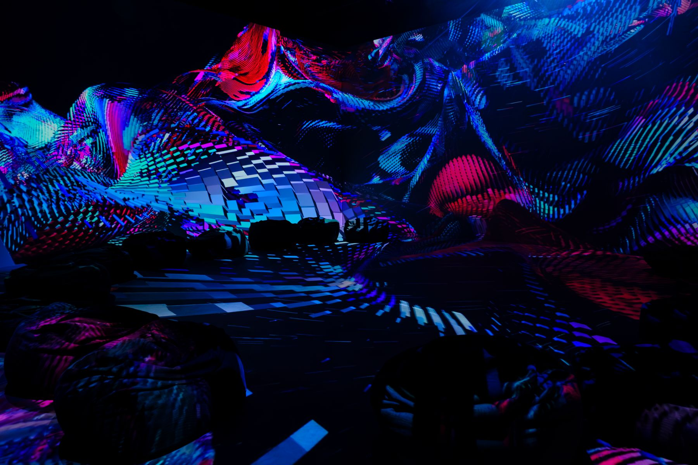
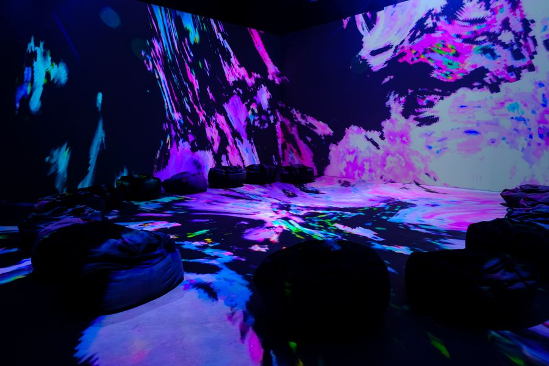
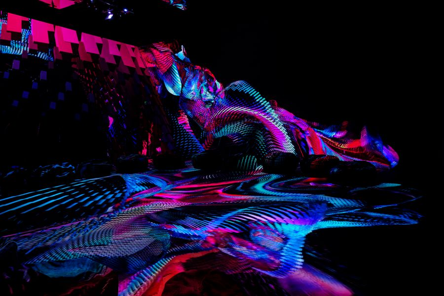
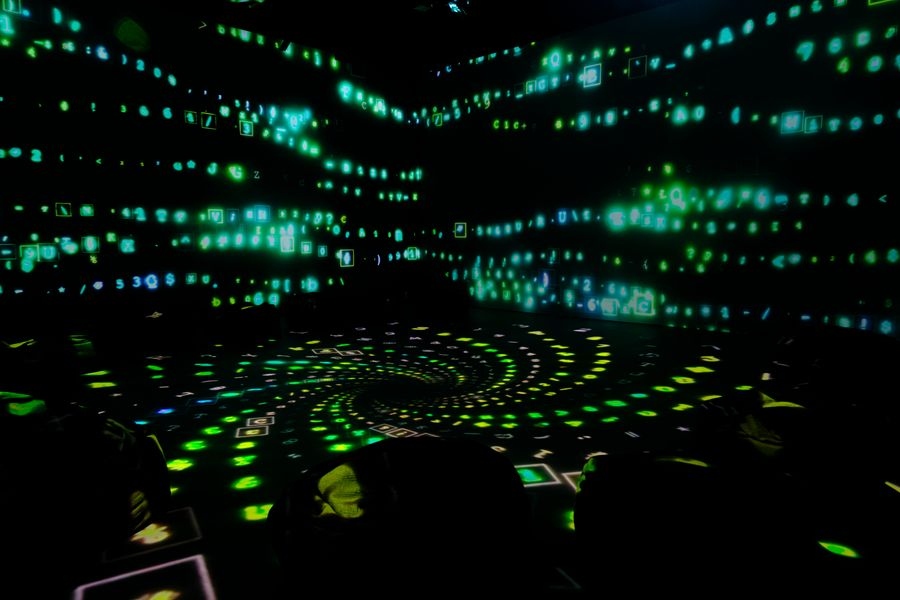
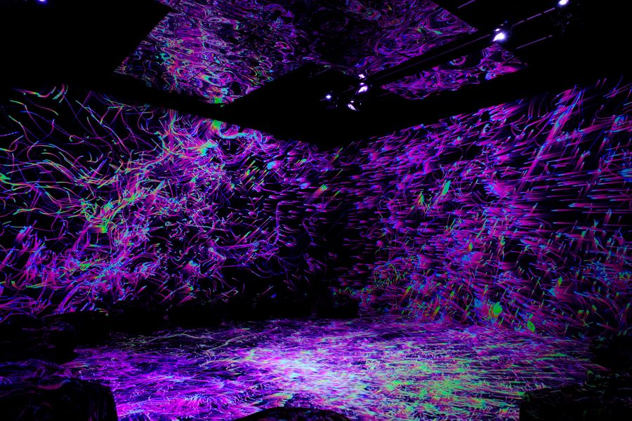
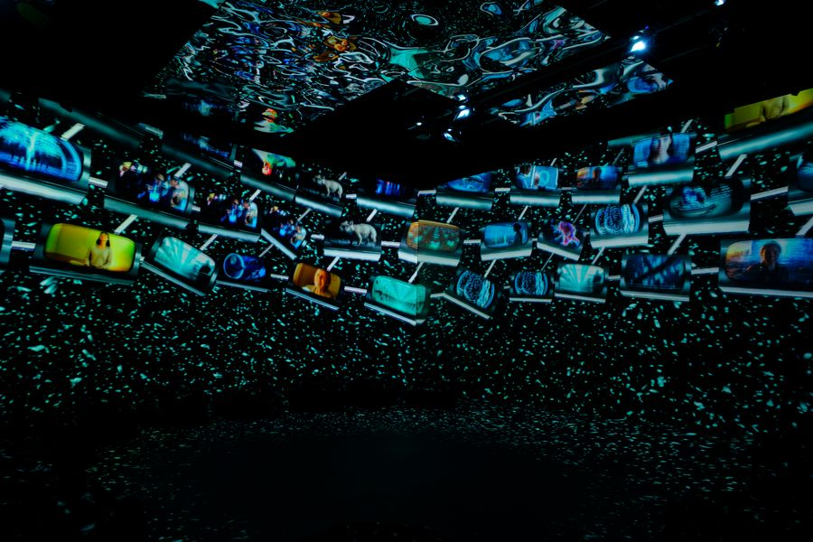
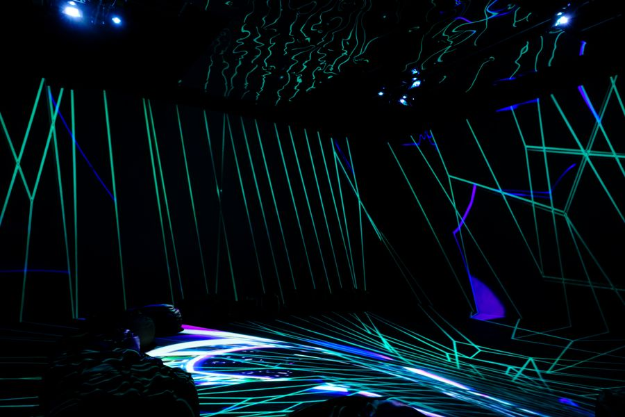
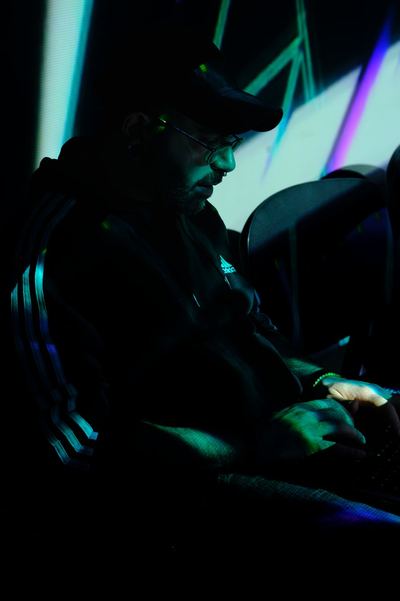
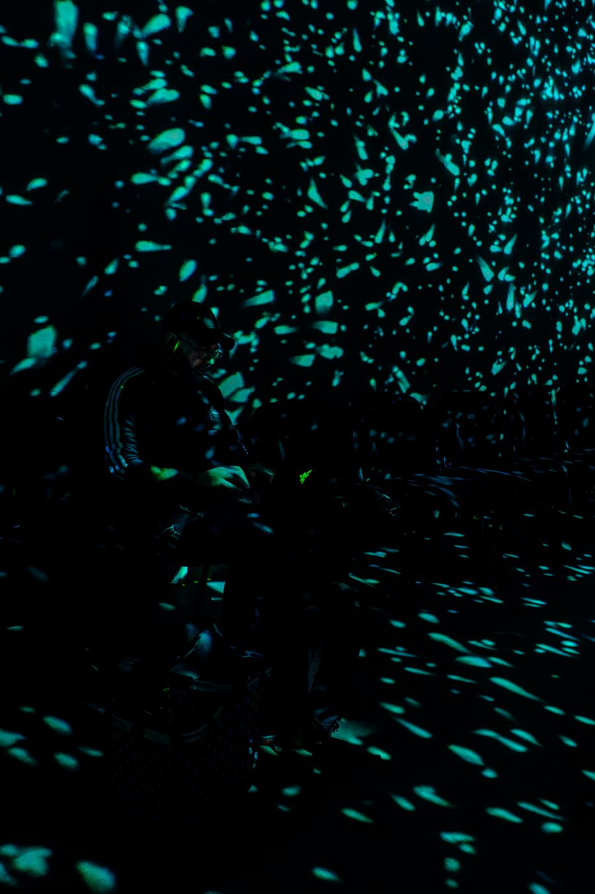
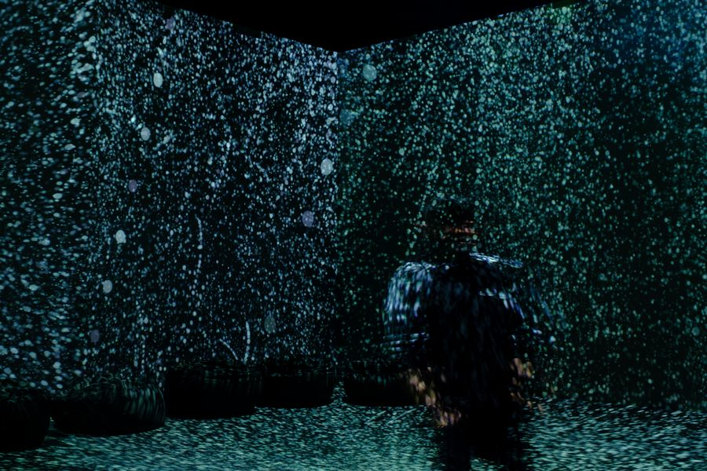
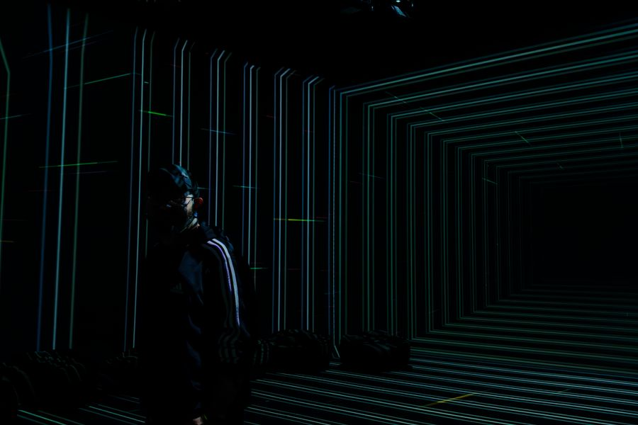
Credits
- Concept, synthetic art & prompt designFrancesco Della Toffola (Xymmetry.studio) & Emanuele Musca (Evestrum_AV)
- Visuals & interactivityFrancesco Della Toffola (Xymmetry.studio)
- Sound & AI voiceoverEmanuele Musca (Evestrum_AV)
- PhotographyMartina Giannetti
- Presented byAura Labs, Berlin